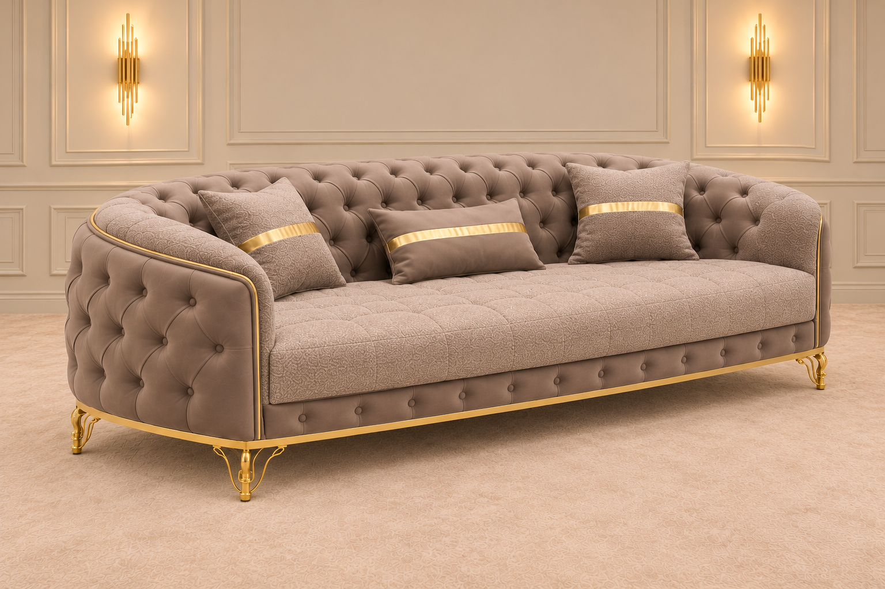
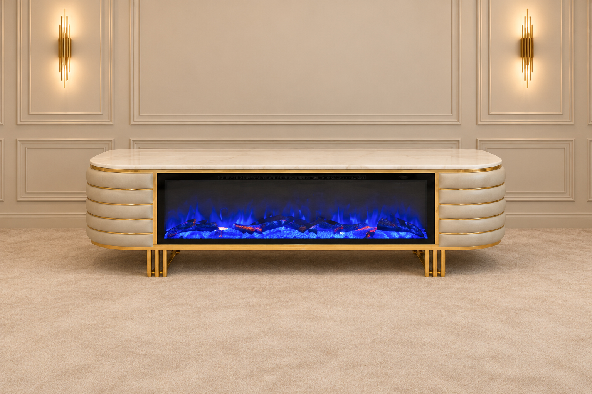

How to build a warm, neutral living room around one statement sofa
Choose the sofa first, then let it set the palette. Here is the order we follow in our Hamilton showroom — palette, texture, metal, light and carpet — so a neutral room feels warm and finished, never flat.


Key takeaways
- Pick the sofa first. It is the largest piece in the room, so its colour and shape decide everything else.
- Use warm undertones. Cream, taupe, sand and mocha feel cosy; cool greys and stark white feel cold.
- Add interest with texture — velvet, bouclé, embroidery, linen and wood — rather than extra colours.
- Keep gold to three or four accents that repeat around the room.
- Light in three layers: ceiling, table or floor lamps, and a warm focal glow such as a fireplace.
- Size the carpet so at least the front legs of every seat sit on it.
1. Start with the sofa
In a living room, the sofa is the piece you will see most, sit on most and replace least often. That is why we always plan the room around it, not the other way round. Decide on the sofa's size, shape and colour first; the walls, carpet and accessories are far easier to change later.
For a warm neutral scheme, look for upholstery in a soft, light-catching fabric and a shape with some personality — rolled arms, deep tufting or a curved back. A statement sofa in a quiet colour gives you drama without dominating the room.
2. Choose a warm neutral palette
"Neutral" does not have to mean cold. The difference between a calm room and a clinical one is the undertone. Neutrals with a yellow, red or brown base feel warm and welcoming; blue-based greys and bright whites feel cooler.
Take your main colour from the sofa, then choose two or three related shades that are a little lighter and a little darker. Repeating the same undertone across the walls, curtains and carpet is what makes a neutral room feel intentional.

3. Layer texture, not colour
When the palette is quiet, texture does the talking. Mix surfaces that catch light differently so the eye has something to explore:
- Soft: velvet or bouclé upholstery, wool throws, linen curtains.
- Patterned: an embroidered or medallion carpet, tone-on-tone cushions.
- Natural: wood, stone, ceramics and real plants.
- Polished: a little metal or glass to add sparkle.
A neutral room is never boring when every surface feels different under your hand.
4. Add gold in small doses
Brushed gold warms up cream and taupe beautifully, but it works best as a repeated accent rather than a theme. Choose three or four touches — for example the sofa legs, a pair of wall lights and a mirror frame — and spread them around the room so they lead the eye from one side to the other.
A simple test: stand in the doorway. If you can see gold everywhere you look, remove one piece.
5. Light the room in layers
Warm neutrals only look warm in warm light. Plan three layers:
- Ambient — ceiling lights on a dimmer for the whole room.
- Task — table or floor lamps beside the seats for reading.
- Accent — wall lights, candles or a fireplace glow that makes the room feel cosy in the evening.
Choose bulbs with a warm colour temperature (around 2700K) so cream walls stay creamy instead of turning grey.

6. Ground it with the right carpet
A carpet pulls the seating together into one group. The most common mistake is choosing one that is too small. As a rule, at least the front legs of the sofa and every armchair should sit on the carpet.
| Room | Seating | Carpet size |
|---|---|---|
| Small | Sofa + 1 armchair | 300 × 200 cm |
| Medium | Sofa + 2 armchairs | 350 × 250 cm |
| Large / open plan | Full sofa set | 500 × 400 cm |
In a neutral room, an embroidered carpet with a classic pattern adds depth without introducing a new colour story.
Shop the look
Quick checklist
- The sofa is chosen and measured for the room.
- Every main colour shares a warm undertone.
- At least four different textures are in the room.
- Gold appears three or four times, spread around the room.
- There are three layers of warm light.
- The front legs of all seating sit on the carpet.
Frequently asked questions
What colours make a neutral living room feel warm?
Choose neutrals with a yellow, red or brown undertone — cream, greige, taupe, mocha and soft sand — instead of cool greys and stark white. Repeat the sofa's undertone in the walls, carpet and curtains so the whole room reads as one warm palette.
How do you stop a neutral room from looking boring?
Use texture instead of colour: mix velvet or bouclé upholstery, a patterned or embroidered carpet, linen curtains and a little metal. Add plants and layered lighting so the room changes through the day.
What size carpet should go under a sofa?
The carpet should be wide enough for at least the front legs of the sofa and armchairs to sit on it. In most living rooms that means a carpet slightly wider than the sofa; a 300 × 200 cm carpet suits many medium rooms, and larger seating groups need something bigger.
How much gold is too much in a living room?
Keep gold to a few repeated accents — for example sofa legs, a lamp and a mirror or wall light. If you can see gold everywhere you look, remove one piece.
Home Centre Green Design Team
The team behind our Hamilton showroom. We help customers choose Turkish-made sofas, beds and carpets every day, and we write these guides to answer the questions we hear most in store.